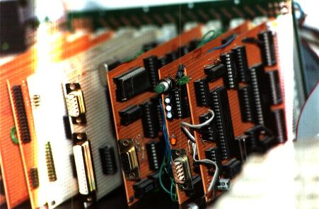
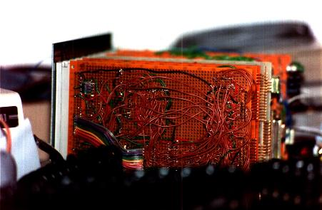
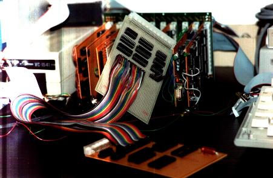
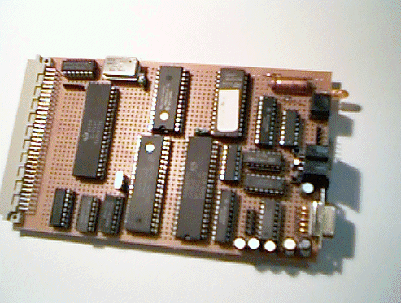
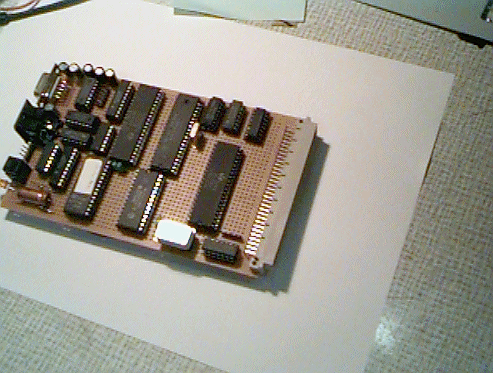

This is my selfdesigned and selfbuilt computer
© André Fachat
On this page are a few images of my selfbuilt computer(s), just to give some impression of how it looks like and of what kind of technique it is. (Remeber, I built this thingy aroung 1989-1991, quite some time ago...)
Below there also is an image how my current configuration looks like. All of it except the SCSI harddisk on my selfbuilt computer is working. Ok, the SCSI interface is there, the drivers are there and the filesystem (FAT16) is there, I just did not have the time to glue them together so far... :-)

This is a view of the computer itself. It consists of a motherboard, that is just a bus plane, and several card boards. From right to left you can see the CPU board, the BIOS board, the video board and the keyboard board. Then there are the IEC board and the shugart bus board to connect PC floppy disk drives.

Here you can see how all these boards are built...

This shows the Emulator board (the grey one in the back) that emulates the 6502 CPU of another computer (a CS/A65 CPU board without MMU, in the front - this very board later became the Gecko prototype board, see also below). The long cable is plugged into the socket where the CPU resides usually on the CPU board and on the special socket on the emulator board. Because the CS/A65 computer with MMU can handle 1 MByte of RAM, the 64 kByte of the emulated CPU are mapped into the memory of the CS/A65 system.
I have been able to test new ROMs for the VC1541 in RAM before burning them into EPROMs. I just replaced the old ROMs on the board with some RAM area from the CS/A computer with the MMU, loaded the new ROM into this RAM (from the CS/A computer) and started the VC1541 DOS.
The Gecko board
After so many people asked me to give some hardware diagrams to the public, I decided to design and build a simple non-MMU system especially for Web-publishing. So here are the photos of this one: 